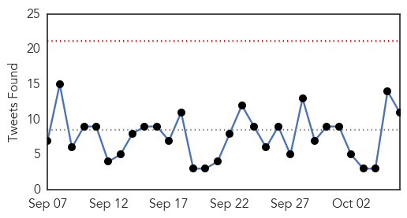
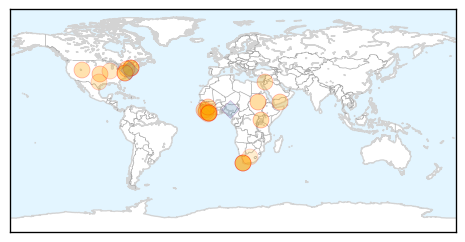
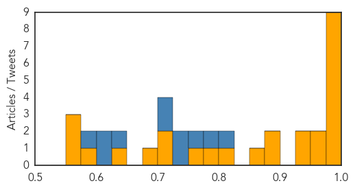
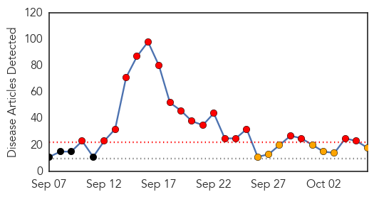
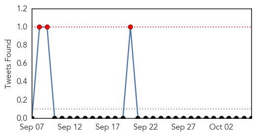

Ebola
30-Day Web Trend
0 alerts, 0 warnings

30-Day Twitter Trend
0 alerts, 0 warnings

Article Locations
Article Confidences
Top Articles:
- 1.000
- Predictions of a U.S. epidemic didn’t come true.
- 1.000
- CDC says people at high risk for Ebola should stay home
- 1.000
- Africa - News and Analysis
- 0.999
- Lessons Learned from Ebola Shared at Consortium Symposium
- 0.999
- Statement on the 7th meeting of the IHR Emergency Committee regarding the Ebola outbreak in West Africa
- 0.998
- WHO Hopeful that Ebola’s End Nears
- 0.996
- UMMS, academic partners awarded $20 million CDC grant to prevent ebola outbreak in Liberia
- 0.994
- Thanks Obama! Ebola down from 100 to 10 new cases a day in Liberia
- 0.981
- Experimental Ebola Treatments Are Ethical, U.N. Says
- 0.975
- UMass Medical School receives $20 million grant to help prevent another Ebola outbreak in Liberia
- 0.964
- Ebola response, U.S. human rights record
- 0.945
- Utah Business
- 0.940
- Liberian President Hopes To Build On Seattle Foundations' Ebola Help
- 0.894
- China-Africa health forum adopts Cape Town Declaration - Xinhua
- 0.875
- PRESIDENT SIRLEAF UNDERSCORES THE IMPORTANCE OF WATER AND SANITAION
- 0.872
- China committed to building 100 health facilities in Africa - Motsoaledi
- 0.809
- Ebola 1st case in the US
- 0.777
- "We have come a long way"-President Koroma
- 0.774
- Ebola countdown : President Ernest Koroma expresses hope
- 0.714
- China, Africa agree on building resilient public health system - Xinhua
- 0.703
- Ebola nurse Nina Pham’s lawsuit against Texas Health Resources will continue
- 0.677
- Emory Given Grant To Study Spread Of Infections In Hospitals
- 0.632
- Australian Red Cross aid workers awarded Florence Nightingale Medals
- 0.588
- So Little But So Much: BESTWA Thrives Amid the Odds
- 0.572
- MOH, Partners Recognize Media’s Role in Improving Health Sector
- 0.569
- Australian Red Cross aid workers awarded Florence Nightingale Medals
- 0.566
- China committed to building 100 health facilities in Africa:Tuesday 6 October 2015
Top Tweets:
- 0.953
- What We Learned From the Ebola Epidemic - Huffington Post http://t.co/7U4UVrIEJb ebola EVD
- 0.943
- Women too afraid to visit maternity facilities during Ebola outbreak - Medical News Today http://t.co/AIaZjAl1dJ ebola EVD
- 0.931
- Ebola nurse Nina Pham's lawsuit against Texas Health Resources will continue - Dallas Morning News (blog) http://t.co/5PMclJC5Ud ebola EVD
- 0.929
- America's Ebola Panic - Slate Magazine http://t.co/DBsz3aiB4F ebola EVD
- 0.924
- RT: 10 days since Ebola left SierraLeone. 32 days before WHO declares the country free of the virus.
- 0.915
- How The Times Covered the Ebola Epidemic - New York Times http://t.co/INP7BDDxhm ebola EVD
- 0.876
- How covered the Ebola outbreak: http://t.co/iFq0cCQWNs
- 0.875
- 200 Ebola Survivors Train in Entrepreneurship - Liberian Daily Observer http://t.co/FuVmrIeJiO ebola EVD
- 0.866
- Would an Ebola Vaccine Move Regeneron Pharmaceuticals' Bottom Line? - Motley Fool http://t.co/9sBC60wdoc ebola EVD
- 0.715
- .@CDCFound brought together partners at a key moment to support and extend CDC work in West Africa Ebola response.
- 0.708
- RT: Nearly 1/3 more SierraLeone women died for refusing 2 rpt 2 health facilities fearing Ebola, new rpt by Liverpool Sch of…
- 0.700
- UMMS, academic partners awarded $20 million CDC grant to prevent ebola ... - EurekAlert (press release) http://t.co/CiMWb6oPoJ ebola EVD
- 0.641
- .@CDCFound resources playing a crucial role in West Africa Ebola response, allowing CDC to be fast and flexible in the RoadtoZero.
- 0.634
- Rethinking the Ebola response: How Liberians helped themselves https://t.co/iSfIdj7buk
- 0.629
- Ebola nurse Nina Pham's lawsuit against Texas Health Resources will continue - Dallas Morning News (blog) http://t.co/JMErLKiclA
- 0.610
- What We Learned From the Ebola Epidemic - Huffington Post http://t.co/OZA8XByTUA
- 0.577
- Tufts Biophysicist Receives NIH New Innovator Award for Ebola Research - Newswise (press release) http://t.co/up5utI7CpB ebola EVD
- 0.565
- Women too afraid to visit maternity facilities during Ebola outbreak - Medical News Today http://t.co/iYJj0uLw8J
Dengue Fever
30-Day Web Trend
19 alerts, 7 warnings

30-Day Twitter Trend
0 alerts, 0 warnings

Article Locations

Article Confidences

Top Articles:
- 0.997
- After Delhi, Rajasthan worst affected. Number of dengue cases reach 1931
- 0.996
- Dengue fever spreads throughout Vietnam, claiming 28 lives
- 0.991
- Dengue, malaria cases rise in Rajasthan, separate OPDs set up
- 0.986
- DOH: Rise of dengue cases not epidemic
- 0.981
- El Nino Linked to Dengue Epidemic Shows New University of Pittsburgh…
- 0.970
- Dengue cases nearing 100,000 mark – DOH
- 0.962
- Vietnam dengue outbreak grows, pushes hospitals to the limit
- 0.946
- 92,000 dengue cases in 9 months
- 0.943
- Pvt hosps lax in sharing dengue data
- 0.915
- Weather ailments go viral
- 0.871
- SurSur IPHO keeps close watch on dengue
- 0.829
- São Paulo Takes Drastic Step to Prevent Dengue Outbreak
- 0.798
- With 570 cases, Ludhiana battles to fight dengue
- 0.780
- Senator Nancy wants Senate Inquiry on Dengue
- 0.725
- Health Min for developing mechanism to ascertain dengue data
- 0.663
- MMDA chief urges LGUs to intensify anti-dengue ops
- 0.643
- Travel history aids in pediatric illness diagnoses at ED
- 0.572
- Cebu News, The Freeman Sections, The Freeman
Top Tweets:
- 0.725
- Flavivirus news: Amid dengue crisis, Delhi govt prepares for swine flu - Daily News & Analysis:... http://t.co/RMlCQ0vE1U pathogenposse